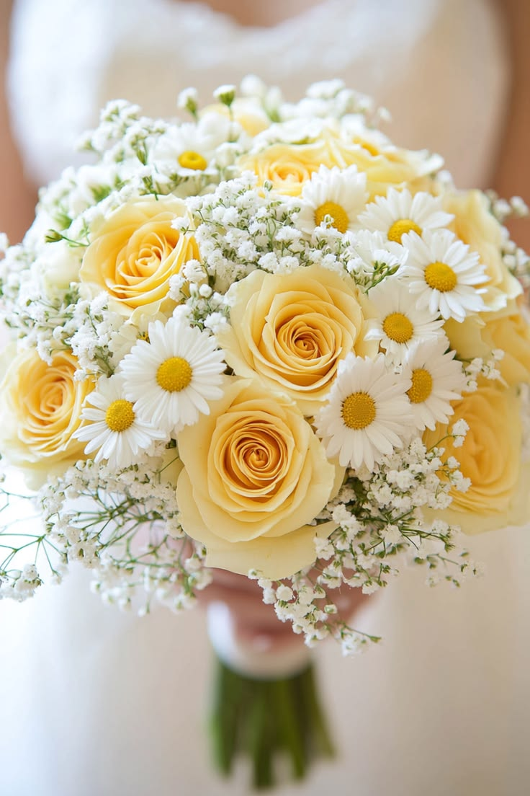

Création de bouquets personnalisés
Offrez des fleurs qui vous ressemblent ! Je crée des bouquets personnalisés, imaginés selon vos envies, vos goûts et vos occasions. Que ce soit pour un anniversaire, un mariage, une déclaration d’amour ou simplement pour faire plaisir, chaque bouquet est réalisé avec soin, créativité et passion. Choisissez vos couleurs, vos fleurs et votre style pour un bouquet unique, qui transmettra vos plus belles émotions.
En savoir plus sur la création de bouquets personnalisés